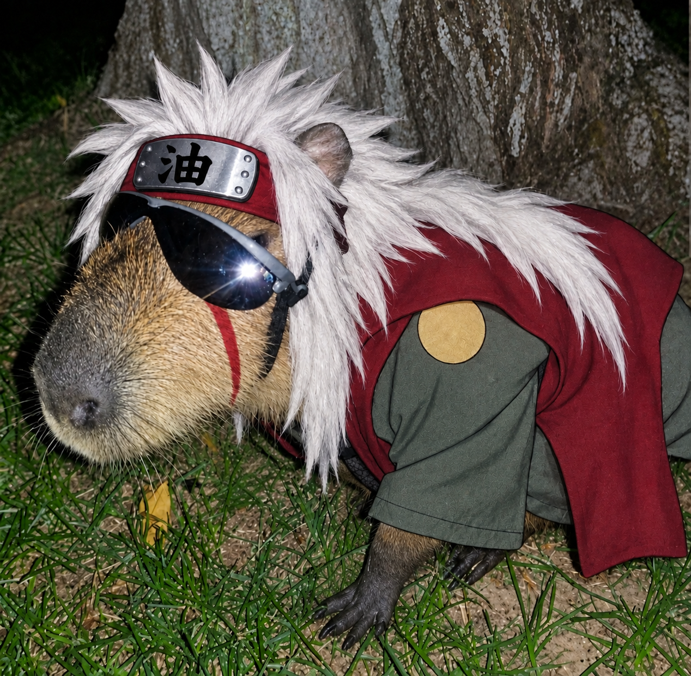

Arthur Santangelo
HTML · CSS · JS
Meus Projetos
Sobre Mim

Sou o Mestre Jiraiya, nasci na Vila da Folha e me tornei amigo da Tsunade e do Orochimaru, formando assim os lendários Três Sannin. Sob a tutela do Terceiro Hokage, percorri os campos de batalha e moldei o meu destino na arte dos ninjas.
Ao longo de minhas viagens pelo mundo, busquei a paz e profetizei o surgimento de um grande herói. Minha jornada me levou a treinar mentes brilhantes e corações valentes, deixando marcas profundas em gerações.
Carrego o espírito dos sapos do Monte Myoboku e a paixão pela escrita em cada passo. Minha determinação segue viva na vontade do fogo que passei aos meus amados discípulos.